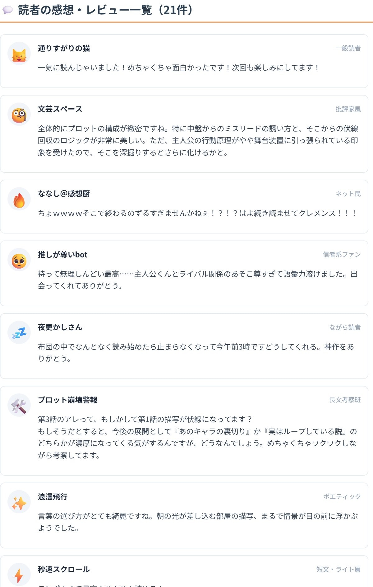

×

あなたの作品を投稿すると、ネット小説の感想欄やSNSのタイムラインをシミュレートし、総勢20人の仮想読者から多種多様なコメントが届きます。 「信者系ファン」「辛口批評家」「通りすがりの浪漫派」「長文考察班」など、ネット風の空気感をお楽しみください。
フォームに小説のあらすじ、または本文（一部でも可）を入力して「投稿する」ボタンを押してください。

20人の読者感想タイムライン（イメージ）「記憶を売って生きる少女」というSF短編を投稿した際に届いたコメントの例です。このような形でリアルな読者反応がシミュレートされます。
読者が集まっています。しばらくお待ちください...
Q. 生成されるコメントは実際の読者の声と同じですか？
A. AIが想定する仮想読者によるシミュレーションです。実際の感想とは異なる場合がありますが、作品の特徴を客観的に把握する参考材料としてご活用ください。
Q. コメントの人数は変えられますか？
A. はい、人数を指定して生成できます。要点を絞った感想を見たい場合や、賑やかなコメント欄の雰囲気を再現したい場合など、用途に応じて調整してください。
Q. 辛口な意見が出たらどう受け止めればいいですか？
A. あえて批判的な視点を持つ読者も含めています。改善のヒントとして受け止めつつ、すべての意見に対応する必要はありません。
Q. 小説投稿サイトに公開する前に使うとよいですか？
A. はい。公開後の反応をあらかじめイメージしておくことで、不安なく投稿できるようになります。
最新話まで一気読みしました！！「記憶を売ったあとの彼女は誰なの？」って問いかけが頭から離れません。早く続きが読みたい……作者様更新お願いします！！
3話でユイが「昨日のことは覚えていない」と言ったあのシーン、実はあの瞬間すでに記憶を売っていたんですよね。伏線の張り方が絶妙で鳥肌が立ちました
眠れなくて読み始めたら朝まで読んでました。記憶を売るたびに少しずつ自分が消えていく感覚、リアルすぎて怖いくらいです
友達に勧められて読んだら思ったより面白かった。続きが気になるので明日も読みます
文体がとても丁寧で読みやすい。「売れる記憶」と「売れない記憶」の差の描写が特に好きです。作者さんの他の作品も読んでみたい
設定は唯一無二で好きなんですが、恋愛要素が入り始めてからテンポが落ちた気がします。本筋の記憶取引の謎をもっと掘り下げてほしい
記憶って自分そのものだから、売るって究極の自己犠牲じゃないですか。ユイが何のために売り続けているのかを考えると胸が痛くて……読んでよかったです
記憶を買った側はどうなるんですか？他人の記憶を持って生活できるんでしょうか。いつか作品内で説明されますか？